BREITNER & PAYNE
PERSONAL PROJECT
This project is an in-depth exploration of a digital twin. Built in Unreal Engine, it delivers an immersive experience — allowing users not only to view the factory floor, but to interact with it.
JSON data communication between the Unreal server, client computer, and mobile app enables users to navigate the factory, interact, and control the machines remotely.
JSON data communication between the Unreal server, client computer, and mobile app enables users to navigate the factory, interact, and control the machines remotely.
▪ Designed for factory management
▪ Real-time data updates
▪ Web-based client access
▪ Custom-modeled factory and production line
▪ Mobile app integration with the engine
▪ Real-time data updates
▪ Web-based client access
▪ Custom-modeled factory and production line
▪ Mobile app integration with the engine
→ MORE
4040 CITADEL PARK
PERSONAL PROJECT
A showcase for a new mixed-use commercial and residential development.
Focusing on both interior and exterior spaces, the project explores retail areas, offices, and amenities within the complex, as well as key landmarks across the 30,044 km² cityscape.
Focusing on both interior and exterior spaces, the project explores retail areas, offices, and amenities within the complex, as well as key landmarks across the 30,044 km² cityscape.
▪ Developed for construction companies and real estate developers
▪ Apartment availability search →
▪ Standalone executable for client PCs
▪ Fully interactive office unit →
▪ Custom-modeled surroundings →
▪ Apartment availability search →
▪ Standalone executable for client PCs
▪ Fully interactive office unit →
▪ Custom-modeled surroundings →
→ MORE
PORTO LIDADOR
CLIENT PROJECT
A series of still images for a new residential development in Porto, created for Actual Arquitectos.
Close collaboration with the architectural team improved my understanding of Revit technical drawings, scale and material fidelity and approaching image creation from a marketing perspective.
Close collaboration with the architectural team improved my understanding of Revit technical drawings, scale and material fidelity and approaching image creation from a marketing perspective.
▪ Project currently in development →
▪ Model sourced from the architect’s Revit files
▪ Geometry rebuilt in 3ds Max for consistency
▪ Custom materials matched to client specifications
▪ Rendered with V-Ray
▪ Model sourced from the architect’s Revit files
▪ Geometry rebuilt in 3ds Max for consistency
▪ Custom materials matched to client specifications
▪ Rendered with V-Ray

Revit
→ MORE
PLANO ALTO
PERSONAL PROJECT
This Plano Alto apartment is presented using Unreal Engine’s VCam Mobile App, capturing real camera movement and cinematic takes.
The phone’s motion was recorded as tracking data, directly driving the virtual camera within the scene.
The phone’s motion was recorded as tracking data, directly driving the virtual camera within the scene.
▪ Developed for real estate firms
▪ Virtual walkthrough video →
▪ Cinematic showcase video →
▪ Textured with Quixel Megascans
▪ First time texturing, rendering and animating in Unreal Engine
▪ Virtual walkthrough video →
▪ Cinematic showcase video →
▪ Textured with Quixel Megascans
▪ First time texturing, rendering and animating in Unreal Engine
→ MORE
STABLE WEBSITE
As my focus shifted toward 3D, my background in web design became a key asset in creating a dedicated platform to showcase my work.
Stable is the central hub for my archviz portfolio, emphasizing strong visual presentation with minimal text content.
Stable is the central hub for my archviz portfolio, emphasizing strong visual presentation with minimal text content.
▪ Featuring 11 archviz projects →
▪ Targeted at architectural firms and real estate developers
▪ Showcases stills, videos, and 3D models
▪ Interactive 3D models powered by Three.js
▪ Targeted at architectural firms and real estate developers
▪ Showcases stills, videos, and 3D models
▪ Interactive 3D models powered by Three.js
→ MORE
MOBILE APPS
THINKDIGITAL
As the sole frontend developer and designer at ThinkDigital, I design our web app interfaces and develop them alongside my the backend team.
Over the past few years, we have built a suite of mobile web applications addressing the operational needs of industrial clients, primarily used by workers on the factory floor.
These applications are fully deployed and in active daily use.
Over the past few years, we have built a suite of mobile web applications addressing the operational needs of industrial clients, primarily used by workers on the factory floor.
These applications are fully deployed and in active daily use.
▪ 7 Web Apps deployed
▪ Production Oversight (purple)
▪ Stock Management (green)
▪ Fleet Monitoring (magenta)
▪ Maintenance Guidance, Ticket Management, and more
▪ Production Oversight (purple)
▪ Stock Management (green)
▪ Fleet Monitoring (magenta)
▪ Maintenance Guidance, Ticket Management, and more
VIDEOWALLS
THINKDIGITAL
These videowalls display key operational metrics on large-format workplace screens.
They are delivered as a web-based, plug-and-play solution, providing teams with instant visibility into critical production data.
The system is in active use across multiple client sites.
They are delivered as a web-based, plug-and-play solution, providing teams with instant visibility into critical production data.
The system is in active use across multiple client sites.
▪ 15+ videowalls deployed
▪ Production status
▪ OEE and performance metrics
▪ Personnel oversight, product dispatch, and more
▪ Production status
▪ OEE and performance metrics
▪ Personnel oversight, product dispatch, and more
PRODUCT DESIGN
THINKDIGITAL
At ThinkDigital we develop both software and hardware for business instrumentation systems.
On the hardware side, my role involved using manufacturer-provided 3D models to produce high-quality renders for prototyping and marketing.
On the hardware side, my role involved using manufacturer-provided 3D models to produce high-quality renders for prototyping and marketing.
▪ Early renders created in Cinema 4D and later in 3ds Max
▪ Internal components built from STEP files provided by the hardware team
▪ Product labeling designed in Illustrator
▪ Internal components built from STEP files provided by the hardware team
▪ Product labeling designed in Illustrator
THREE.JS
Three.js bridges 3D and web design. It allows me to present 3D without converting it back to 2D.
Having a 3D project catalog on Stable website, it is my preferred way to showcase models created in 3ds Max.
Having a 3D project catalog on Stable website, it is my preferred way to showcase models created in 3ds Max.
▪ Intuitive building exploration →
▪ Clear perception of space and scale →
▪ Accessible on mobile devices
▪ Clear perception of space and scale →
▪ Accessible on mobile devices
DIGITAL TWINS
THINKDIGITAL
My introduction to 3D began at ThinkDigital where I developed visual representations of our client's production lines.
Using real-world photography as reference, I created low-poly models of each machine across several lines. These renders would later receive color overlays to indicate machine status and malfunctions.
Using real-world photography as reference, I created low-poly models of each machine across several lines. These renders would later receive color overlays to indicate machine status and malfunctions.
▪ Early renders created in Cinema 4D and later in 3ds Max
▪ Low-poly machines modeled from scratch
▪ Balanced visual fidelity with operational clarity
▪ Hand-traced SVG overlays for real-time alert indicators
▪ Low-poly machines modeled from scratch
▪ Balanced visual fidelity with operational clarity
▪ Hand-traced SVG overlays for real-time alert indicators
COMPANY WEBSITES
THINKDIGITAL
Shortly after joining ThinkDigital, I was tasked with the redesign of the company’s websites.
Inspired by Apple’s presentation style, the focus was on letting imagery lead while keeping text bold, clear, and concise.
Inspired by Apple’s presentation style, the focus was on letting imagery lead while keeping text bold, clear, and concise.
▪ ThinkDigital main website →
▪ Efficient Factory (industrial solutions) website →
▪ TrackingDiary (fleet management) website →
▪ Hundreds of visual assets created (mockups and renders)
▪ Efficient Factory (industrial solutions) website →
▪ TrackingDiary (fleet management) website →
▪ Hundreds of visual assets created (mockups and renders)
COMPANY LOGOS
THINKDIGITAL
One of my first assignments at ThinkDigital was to redesign the company logo. TThe creative process required balancing experimentation with the responsibility of representing a brand I was still getting to know.
The rebrand proved successful and led to the redesign and creation of logos for several additional company products.
The rebrand proved successful and led to the redesign and creation of logos for several additional company products.
▪ Conceptually challenging due to the intangible nature of logo design
▪ Design decisions carefully justified and defended
▪ Simple shapes and precise line work to convey a modern technology brand
▪ Design decisions carefully justified and defended
▪ Simple shapes and precise line work to convey a modern technology brand
IT SEEMS LIKE WE'VE REACHED THE END
OF MY PROFESSIONAL CAPABILITIES
OF MY PROFESSIONAL CAPABILITIES
DESIGNED BY
Matheus Monteiro
DEVELOPED BY
Matheus Monteiro
VISUAL CONTENT
Matheus Monteiro
CONSULTANT
Claude
BUT PERHAPS THERE ARE OTHER RELEVANT THINGS
APART FROM COMPUTER SKILLS
APART FROM COMPUTER SKILLS
PLACES
natural
BRAZIL
exchange study
SPAIN
lived
IRELAND
living
PORTUGAL
EDUCATION
university
SÃO PAULO STATE UNIVERSITY (UNESP)
bachelor
ECONOMICS
WORK
(2019-2020)
dublin
THE GALWAY HOOKER PUB
(2020-2025)
aveiro
THINKDIGITAL
MOVIES
favorite
PARIS, TEXAS
second
THE SHAWSHANK REDEMPTION
third
SUPERBAD
TV SHOWS
favorite
BREAKING BAD
second
NORMAL PEOPLE
third
JOE PERA TALKS WITH YOU
GAMES
favorite
RED DEAD REDEMPTION 2
second
OUTER WILDS
third
CONTROL
TOUCH GRASS
favorite
TENNIS
second
COOKING
third
WOODWORKING (i’m getting old)
2025 BEST
favorite
ONE BATTLE AFTER ANOTHER
second
CLAIR OBSCUR
third
ARC RAIDERS
THANK YOU FOR STAYING UNTIL THE END
2023-2026
3D ARCHVIZ
UX UI & DEV
PRODUCT DESIGN
THREE.JS
2020-2022
WEB DESIGN
GRAPHIC DESIGN

Aerial view of Breitner Payne's digital replica. User can explore all factory sectors and go in-depth on the production line.

Surrounding view of 4040 Citadel complex.

Rear view of a residential building in Porto. Client: Actual Arquitectos

One of Plano Alto apartment's living room.

Highlights of Stable's website

Web apps screenshots. Clients: JC Ribeiro (cork), Sumol Compal (food and beverage), Motaengil (construction)

Videowall used on factory floor to monitor production metrics, progress and equipment status. Client: Sumol Compal (food and beverage)

Exploded view of a smoke detector/sensor device to prevent forest fires. Client: Portuguese government

Screenshot of an interactive 3D house model on Stable's website.

Real-time overview of a canned food production line. Client: Sumol Compal (food and beverage)

Screenshots of ThinkDigital's (company) and Efficient Factory's (product) websites

ThinkDigital's (company) and TrackingDiary's (product) logo redesigns